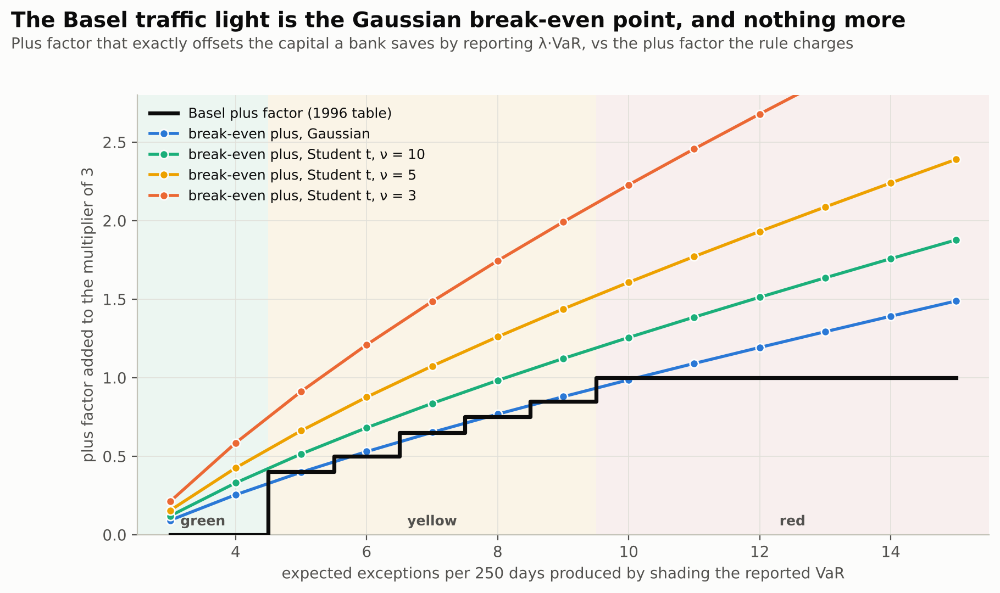
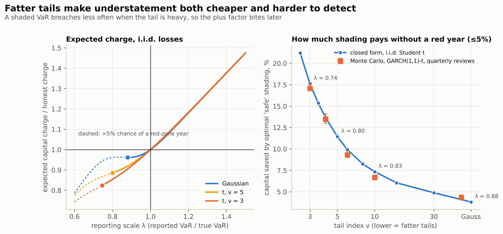
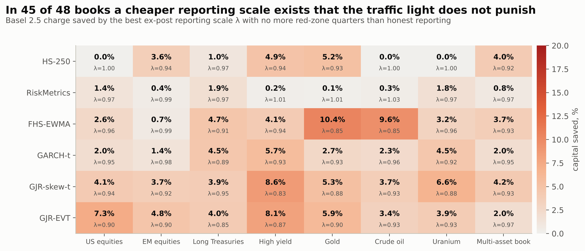
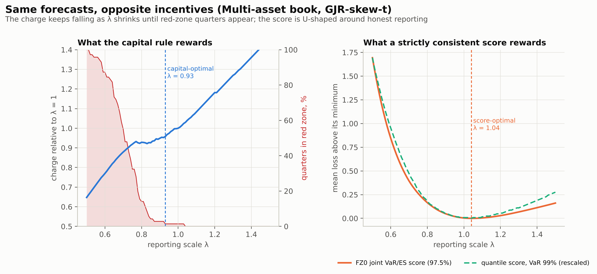
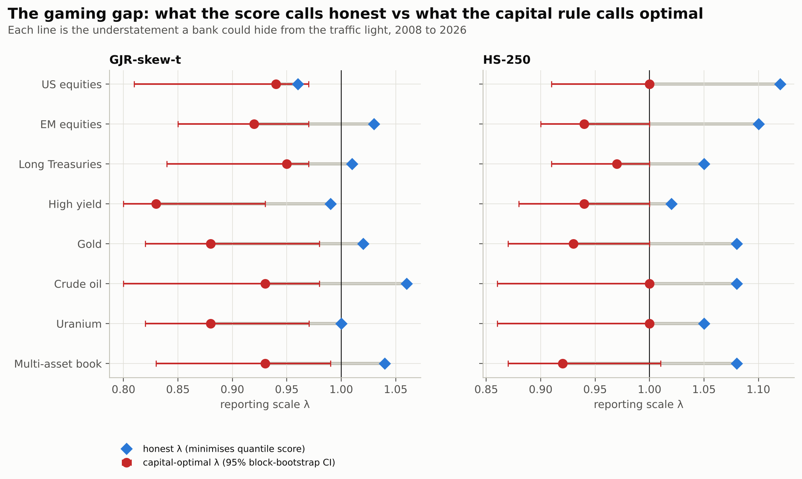
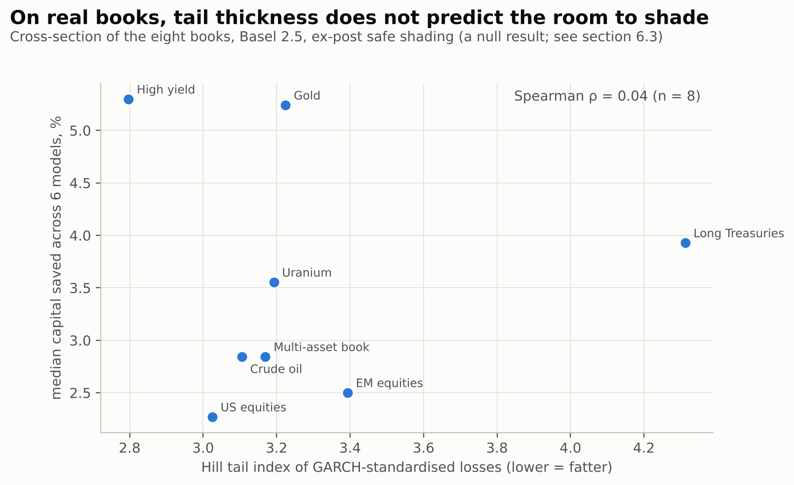
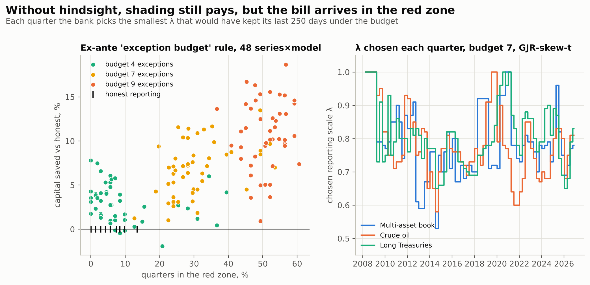
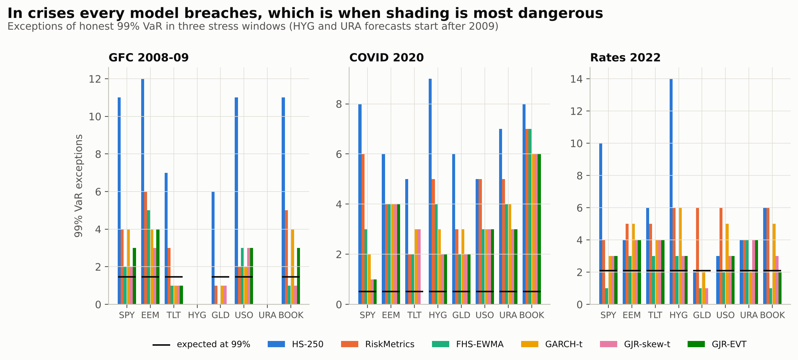

Working paper · Project 06
The incentive structure of the Basel VaR traffic light: closed form, Monte Carlo and 216,552 out-of-sample forecasts, 2008–2026
Project 06 of 30 Quant Research Projects · Working paper, November 2026

A Value-at-Risk calculator is usually judged by how often its forecast is breached. Regulators turn those breaches into money: since 1996 a bank's market-risk charge is a multiple of its own reported VaR, and the multiple rises (the "plus factor") only when the bank sees five or more breaches in 250 days. This project asks whether that rule makes honest reporting the cheapest strategy, or whether a bank that shades its VaR by a factor λ < 1 pays less capital than it is penalised.
The analysis has three parts. A closed form under i.i.d. losses gives the plus factor that would exactly offset the capital saved by shading. A Monte Carlo with GARCH(1,1)-t losses and the real quarterly review mechanics checks it. Then an empirical test runs six standard VaR/ES models (historical simulation, RiskMetrics, filtered HS, GARCH-t, GJR-GARCH skew-t, GJR-GARCH + EVT) strictly out of sample on seven ETFs and a multi-asset book, from April 2008 to November 2026, under both the Basel 2.5 rule and the FRTB rule.
Main findings
What this means. A VaR backtest that only counts exceptions is not incentive compatible once losses have fat tails, which they do on every asset here (Hill tail index 2.8 to 4.3). The fix the theory suggests is not a steeper table for one distribution but a capital add-on tied to a strictly consistent score, which rewards the honest forecast for any distribution.
Most "VaR calculator" projects compute a number and count how often it was breached. That tells you whether a forecast is calibrated. It does not answer the question a regulator cares about: does the rule that turns breaches into capital make honesty the cheapest strategy?
The internal-models approach works like this. A bank reports its 99% one-day VaR each day. Its charge is
$$\text{charge}t = \max\Big(\text{VaR}^{10d}{t-1},\; (3 + \text{plus}t)\cdot\tfrac{1}{60}\textstyle\sum{i=1}^{60}\text{VaR}^{10d}_{t-i}\Big),$$
where the plus factor depends on the number N of days in the last 250 on which the loss exceeded the reported VaR (green N ≤ 4: 0; yellow 5–9: 0.40 to 0.85; red N ≥ 10: 1.00, and the supervisor may reject the model). FRTB kept the machinery: 1.5 + plus (0 to 0.50) now multiplies the 97.5% Expected Shortfall, but the plus factor is still driven by 99% VaR exceptions.
A bank that reports λ·VaR pays λ times less, and is punished only through the plus factor. So the question has a precise form:
Is λ · (3 + E[plus(N) | λ]) minimised at λ = 1?
Pieces of the answer exist. Pérignon & Smith (2010) and Kerkhof & Melenberg (2004) study banks' reported VaRs, Berkowitz, Christoffersen & Pelletier (2011) show that exception-count tests have little power at 250 observations, and elicitability theory (Gneiting 2011; Fissler & Ziegel 2016) says that scoring functions can make honest reporting optimal while ES alone cannot. What I could not find is the direct calculation: how much capital the traffic light lets a bank save by shading, how that depends on the tail of the loss distribution, and what it looks like with real models on real data.
H1 and H2 test the closed form; their thresholds were set after the first theory run, so they are checks, not pre-registered tests. H3 to H5 were written down before any capital, shading or model-choice number was computed (only the forecasts' exception rates had been looked at).
| Hypothesis | Falsified if | Result | |
|---|---|---|---|
| H1 | Under i.i.d. Gaussian losses the plus-factor table is close to break-even. | Safe shading saves > 5% at ν = ∞ | Holds (3.8%) |
| H2 | The saving from safe shading grows as the tail gets fatter. | Saving not monotone in ν | Holds (closed form and Monte Carlo) |
| H3 | On real data, most cells have a capital-optimal scale below 1 that adds no red-zone quarters. | < 24 of 48 cells with a 95% block-bootstrap CI for λ_capital entirely below 1 | Borderline pass (27/48; 23/48 with another seed); against the calibrated scale: 41/48 |
| H4 | A strictly consistent score does not reward that shading. | Median |λ_FZ0 − λ_quantile| > 0.05 | Holds (0.03) |
| H5 | Choosing the model by capital does not pick the score-best model. | Same model in ≥ 50% of cases | Holds (3/16), but only 2 of 13 differences are significant |
Let the true one-day loss have 99% quantile q, and let the bank report λq. With i.i.d. losses the number of exceptions in a year is N ~ Binomial(250, p(λ)), with p(λ) = P(L > λq), and in steady state the charge is proportional to
$$C(\lambda) = \lambda\,\big(3 + \mathbb{E}[\text{plus}(N)]\big).$$
The break-even schedule. Fix the expected number of exceptions a shading bank would produce, N̄. Solving 250·p(λ) = N̄ gives the shading λ(N̄), and the plus factor that exactly cancels the saving is plus*(N̄) = 3(1/λ(N̄) − 1). This depends only on the shape of the tail.
| expected exceptions | 5 | 7 | 9 | 10 |
|---|---|---|---|---|
| Basel plus factor | 0.40 | 0.65 | 0.85 | 1.00 |
| break-even, Gaussian | 0.40 | 0.65 | 0.88 | 0.99 |
| break-even, t (ν = 10) | 0.51 | 0.84 | 1.12 | 1.26 |
| break-even, t (ν = 5) | 0.66 | 1.07 | 1.44 | 1.61 |
| break-even, t (ν = 3) | 0.91 | 1.49 | 1.99 | 2.23 |
The 1996 table reproduces the Gaussian break-even almost exactly (Figure 1). Under normality, shading moves the bank along a nearly flat line. With fat tails, shading the VaR by a given fraction produces fewer extra exceptions, because the quantile is far out in a tail that thins slowly: a t3 bank that reports 0.8·VaR breaches 1.8% of days, a Gaussian bank 3.1%. The plus factor therefore bites late and too gently.
Unconstrained, shading always pays. Because the plus factor is capped at +1 (one third of the base multiplier), the unconstrained minimum is at the edge of the grid (λ = 0.5, a 34% saving) for every ν. The only real deterrent is the red zone, which in practice can trigger model rejection. So the relevant question is how much shading pays while keeping the chance of a red year at or below 5%:
| tail index ν | 2.5 | 3 | 4 | 5 | 6 | 10 | 30 | Gaussian |
|---|---|---|---|---|---|---|---|---|
| safe λ | 0.71 | 0.75 | 0.78 | 0.80 | 0.82 | 0.84 | 0.86 | 0.88 |
| capital saved | 21.2% | 17.6% | 13.7% | 11.4% | 10.0% | 7.4% | 4.9% | 3.8% |

Monte Carlo check. 200 paths of 4,000 days from GARCH(1,1) with standardised t innovations (ω = 0.02, α = 0.08, β = 0.90), the bank knows the true conditional VaR, the supervisor counts exceptions over 250 days and resets the plus factor every quarter, and the constraint is ≤ 5% of quarters in the red zone. Results agree with the closed form (Figure 2, right): ν = 3, λ = 0.75, saving 17.1% (95% bootstrap CI 16.8–17.8%); ν = 6, 9.3%; ν = 50, 4.3%. Volatility clustering does not rescue the rule.
Data. The same daily total-return series as project 01: SPY, EEM, TLT, HYG, GLD, USO and URA (Yahoo Finance adjusted closes, log returns, April 2006 to 20 November 2026), plus a multi-asset book: a daily rebalanced 40/10/35/15 mix of SPY, EEM, TLT and GLD. Reusing the universe is deliberate: project 01 showed which return models are calibrated at 90–98%; this one goes to the 99% tail and asks what the regulator does with it.
Forecasters. Each one issues a one-day 99% VaR, a 97.5% VaR and a 97.5% ES every day, using only data before that day. Parametric models are re-estimated every 20 days on a rolling 500-day window and filtered daily with frozen parameters, as in production.
| Model | Volatility | Shock distribution |
|---|---|---|
| HS-250 | none (last 250 days) | empirical |
| RiskMetrics | EWMA, λ = 0.94 | Gaussian |
| FHS-EWMA | EWMA, λ = 0.94 | empirical standardised residuals (500 days) |
| GARCH-t | GARCH(1,1) | standardised Student t |
| GJR-skew-t | GJR-GARCH(1,1,1) | Hansen skewed t |
| GJR-EVT | GJR-GARCH(1,1,1), Gaussian QML | GPD tail above the 90% residual quantile (McNeil & Frey 2000) |
Out-of-sample periods start on 8 April 2008 (HYG: April 2009, URA: November 2012) and end on 20 November 2026: 36,092 forecast days per model, 216,552 VaR/ES forecasts in total.
Capital rules. Basel 2.5: 3 + plus (1996 table) times the 60-day mean of √10·VaR99. FRTB (simplified): 1.5 + plus (MAR99 table) times the 60-day mean of √10·ES97.5, with no liquidity horizons, stressed calibration or non-modellable factors. In both, exceptions are counted against the reported λ·VaR99 over the last 250 days, the plus factor is reset every 63 trading days, and the first 250 out-of-sample days are burn-in.
Shading. A bank reports λ × (its model's VaR and ES) with λ on a grid from 0.50 to 1.50. The capital-optimal λ minimises the average charge subject to no more red-zone quarters than honest reporting. The honest λ minimises the quantile score of VaR99 (equivalently, recalibrates the model's scale); I also report the λ that minimises the FZ0 score of (VaR97.5, ES97.5). Uncertainty for λ_capital comes from a moving-block bootstrap with 250-day blocks (200 replications for Basel 2.5, 100 for FRTB).
| Model | 99% exception rate (avg) | Kupiec rejects (Holm, of 8) | DQ rejects | Acerbi–Szekely Z2 rejects | FZ0 rank (avg) |
|---|---|---|---|---|---|
| HS-250 | 1.49% | 4 | 8 | 0 | 6.0 |
| RiskMetrics | 2.00% | 7 | 8 | 6 | 4.6 |
| FHS-EWMA | 1.21% | 0 | 5 | 0 | 3.8 |
| GARCH-t | 1.46% | 5 | 5 | 5 | 2.6 |
| GJR-skew-t | 1.15% | 0 | 2 | 0 | 1.6 |
| GJR-EVT | 1.16% | 0 | 4 | 0 | 2.4 |
Tests are Kupiec (unconditional coverage), Christoffersen (independence), the Engle–Manganelli dynamic
quantile test (4 lags + VaR), and the Acerbi–Szekely Z2 test for ES with a HAC standard error. p-values
are adjusted with Holm across the 48 cells of each test (Benjamini–Hochberg in results/backtests.csv).
The ranking is the familiar one: an asymmetric GARCH with a fat-tailed, skewed shock is best (lowest
FZ0 score in 6 of 8 series), RiskMetrics' Gaussian tail is too thin, and historical simulation reacts
too slowly. This table is where most VaR projects end. It says nothing about whether the bank had a
reason to report these numbers.

In 45 of 48 cells some λ < 1 lowers the Basel 2.5 charge without adding a red-zone quarter. The median saving is 3.7% of the charge (the median cell's block-bootstrap 95% CI is 0.4% to 9.1%), the largest 10.4% (FHS-EWMA on gold). The three zero cells are historical simulation on SPY, USO and URA, whose crisis exceptions already use up the red-zone budget. The FRTB numbers are almost identical (median 3.7%), because the incentive comes from the same exception counts.
The pre-registered test (H3) asks for a bootstrap CI entirely below λ = 1. That happens in 27 of 48 cells (Basel 2.5) and 25 of 48 (FRTB), just above the threshold of 24. The count is sensitive to the bootstrap draw: an earlier run with a different seed gave 23 for Basel 2.5, so I read H3 as borderline, not as confirmed. The more meaningful comparison is against the calibrated scale, because several models under-predict risk to begin with (honest λ > 1 for HS, GARCH-t and RiskMetrics). Against that, the CI lies entirely below the honest λ in 41 of 48 cells, and the gap between the two is positive in all 48 (median 0.12).

For the multi-asset book with the best model (GJR-skew-t), the charge keeps falling as λ shrinks until red-zone quarters appear, and it is minimised at λ = 0.93. Both strictly consistent scores are U-shaped and minimised at λ = 1.04: the model is, if anything, slightly too optimistic, and the score asks for more risk, not less. Across all 48 cells the FZ0 and quantile scores agree on the honest scale within 0.03 (median), which supports H4.

The gap is largest for the models that most need upward correction. RiskMetrics' honest scale is 1.18 (its Gaussian tail is too thin), but its capital-optimal scale is 0.98: a bank running RiskMetrics would keep a model that under-reports risk by about 15% and still have no capital reason to fix it. Measured against calibrated reporting, the median cell saves 6.0% (RiskMetrics: 8.4%).
Theory says t-like tails (ν ≈ 3 to 4, which is what the Hill estimates show) leave room for 14–18% savings. The empirical median is 3.7%. Three things close the gap:

The ex-post optimum uses the whole sample. A real bank would have to choose λ in advance. The simplest rule: at each quarterly reset, pick the smallest λ that would have kept the past 250 days at or below a budget of B exceptions.
| budget B | median charge vs honest | median red-zone quarters | extra red quarters vs honest | cells with more red quarters |
|---|---|---|---|---|
| 4 (stay green) | −2.7% | 5.6% | +4.4 pp | 42 / 48 |
| 7 (mid-yellow) | −7.1% | 28.2% | +28.2 pp | 48 / 48 |
| 9 (edge of red) | −10.8% | 52.1% | +49.3 pp | 48 / 48 |

The rule saves capital but overshoots its own budget (3.3% exception rate when aiming at 2.8%), because volatility regimes change faster than the 250-day lookback. Under Basel 2.5 a red zone can mean losing the model approval, so a rational bank would not run this rule. That is the honest conclusion of this section: the traffic light leaves money on the table ex post, but harvesting it ex ante requires taking red-zone risk. The incentive problem is real at the margin (B = 4 still saves 2.7% for 4.4 pp of extra red quarters), not a free lunch.
A bank does not have to scale its numbers: it can choose among models. Among each series' red-free models, the capital-minimising choice is the FZ0-best model in only 3 of 16 series × regime cases (Basel 2.5: EEM, HYG; FRTB: HYG). It picks RiskMetrics for gold and Treasuries, and plain GARCH-t for crude oil. The capital pick is significantly worse by the FZ0 score (Diebold–Mariano, HAC) in two series, gold (p = 0.02) and the multi-asset book (p = 0.02); elsewhere the difference is not significant at 5%. In the multi-asset book the FZ0-best model has red quarters, so the bank's red-free choice costs it 10% more capital; capital and accuracy pull apart in both directions.
| window | expected exceptions per model | HS-250 | RiskMetrics | FHS-EWMA | GARCH-t | GJR-skew-t | GJR-EVT |
|---|---|---|---|---|---|---|---|
| GFC, Sep 2008–Mar 2009 (6 books) | 8.8 | 58 | 21 | 12 | 16 | 11 | 14 |
| COVID, 19 Feb–30 Apr 2020 (8 books) | 4.1 | 54 | 37 | 29 | 28 | 24 | 21 |
| Rates, Jan–Oct 2022 (8 books) | 16.7 | 49 | 42 | 18 | 32 | 25 | 23 |

Every model breaches too often in March 2020, five to thirteen times the nominal rate. Historical simulation is the worst in every window. These are exactly the quarters in which a shaded VaR crosses into the red zone, which is why the empirical safe shading in 6.1 is modest.
pip install -r requirements.txt
./run_all.sh # tests, forecasts, theory, evaluation, figures (about 5 minutes on 4 cores)
src/fetch_data.py rebuilds the data file from Yahoo Finance; the committed CSV is the same file as in
project 01. Every number in this README is in results/:
| file | contents |
|---|---|
forecasts.csv.gz |
216,552 daily VaR99, VaR97.5 and ES97.5 forecasts with realised returns |
theory_break_even.csv, theory_curves.csv, theory_optimum.csv, theory_mc_garch.csv |
Part A |
backtests.csv, scores.csv |
classical tests (raw, Holm, BH) and FZ0 / quantile scores with DM tests |
capital_curves.csv.gz, shading.csv |
charge vs λ for every cell and regime; honest vs capital-optimal λ with CIs |
adaptive.csv, adaptive_lambda_paths.csv.gz |
ex-ante exception-budget rule |
model_choice.csv, stress.csv, tail_index.csv |
sections 6.3, 6.5, 6.6 |
Tests (python -m pytest tests -q, 17 tests) cover the backtests against known cases, the capital
mechanics against a brute-force loop, the strict consistency of both scores, the EVT and skew-t tail
formulas, the absence of look-ahead in the forecasters, and the headline fact that the Basel table
matches the Gaussian break-even schedule.
06-var-backtesting-incentives/
├── README.md this paper
├── LINKEDIN_POST.md
├── run_all.sh requirements.txt
├── data/ etf_daily_log_returns.csv (shared with project 01)
├── src/
│ ├── models.py the six VaR/ES forecasters
│ ├── backtest.py rolling out-of-sample driver
│ ├── backtests.py coverage tests, Z2, quantile and FZ0 scores, DM, Basel/FRTB capital
│ ├── theory.py closed form, break-even schedule, GARCH Monte Carlo
│ ├── evaluate.py everything in sections 5 and 6
│ └── figures.py
├── tests/test_core.py
├── results/ figures/
Related projects. 01 (calibration of return simulators, same data), 13 (GARCH forecasting), 23 (deflated Sharpe: another case where a naive statistic rewards the wrong behaviour).